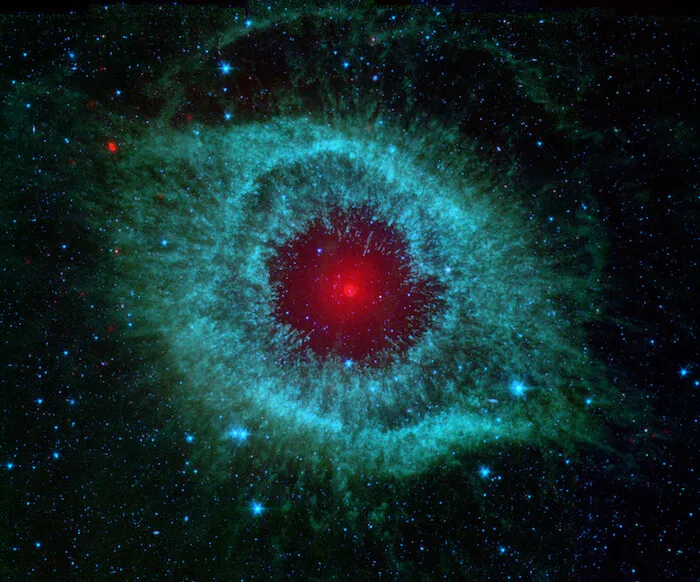

Planet-Planet
"Salah satu penemuan paling mencengangkan dalam beberapa dekade terakhir adalah keberadaan planet-planet ekstrasolar atau eksoplanet. Planet-planet ini mengorbit bintang lain di luar tata surya kita, membuka cakrawala baru dalam pemahaman kita tentang alam semesta. Salah satu metode yang paling umum digunakan untuk mendeteksi eksoplanet adalah metode transit, di mana kecerahan bintang induk akan sedikit berkurang ketika planet melintas di depannya."
EksplorRasi bintang
"Sejak zaman kuno, manusia telah terpesona oleh keindahan langit malam. Mereka melihat pola-pola menarik di antara bintang-bintang dan memberi nama pada pola-pola tersebut. Pola-pola inilah yang kita kenal sebagai rasi bintang. Rasi bintang tidak hanya sekadar kumpulan bintang yang acak, tetapi memiliki makna yang dalam bagi berbagai budaya. Misalnya, rasi bintang Orion, yang sering dikaitkan dengan seorang pemburu dalam mitologi Yunani."
Eksplor

Nebula
"Nebula, awan antarbintang yang luas dan indah, adalah tempat kelahiran bintang-bintang baru. Bayangkan sebuah awan raksasa yang terdiri dari gas dan debu kosmik, perlahan-lahan runtuh karena gaya gravitasi. Saat awan semakin padat, suhu di pusatnya meningkat hingga jutaan derajat Celcius. Pada suhu yang ekstrem ini, terjadi reaksi fusi nuklir yang mengubah hidrogen menjadi helium, melepaskan energi yang sangat besar. Proses inilah yang menandai kelahiran sebuah bintang."
Eksplor